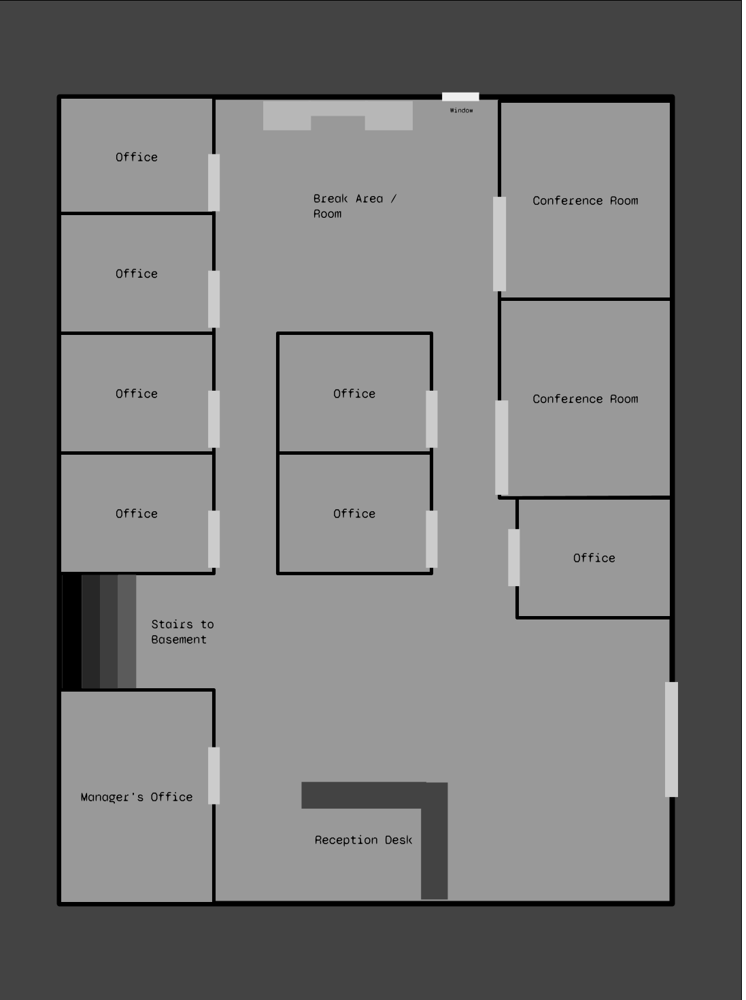
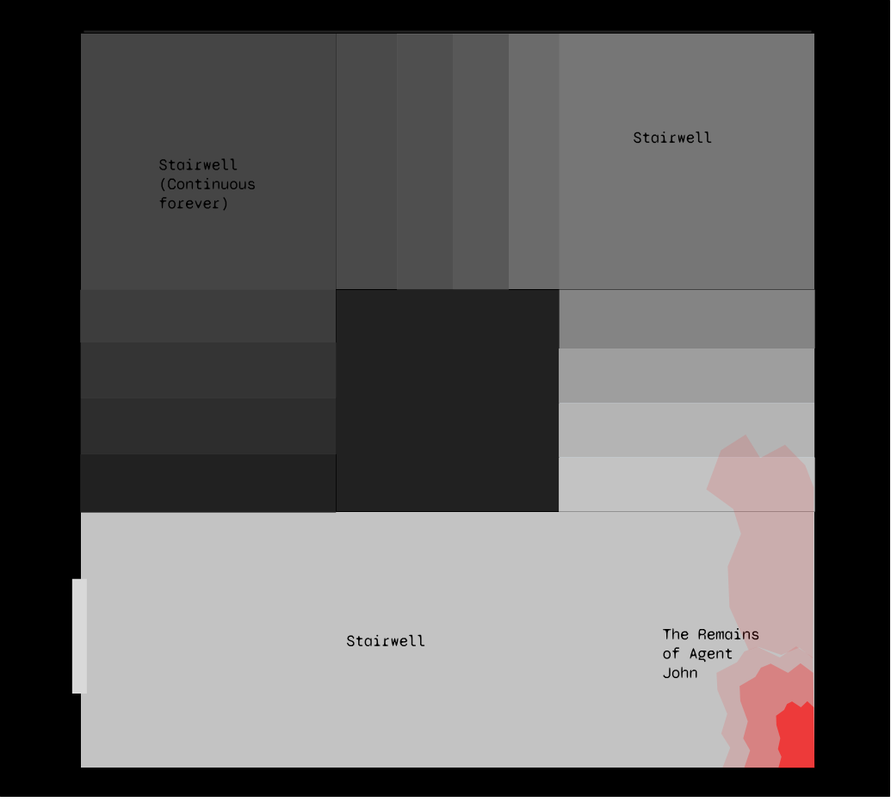

Hook
All of the agents receive a call at 1am at night. Anther group of agents is in trouble. They need backup and fast.
The group of agents in trouble was last reported investigating a reported death cult at a temp worker agency located in Moses Lake, Washington. The fine details of the investigation are classified.
If you’ve never been to Moses lake, don’t go. The town it self is comprised of trailer parks, golf courses, and crumbing administrative buildings. The other group of agents were last seen entering and investigating Wellborn temp agency. That was 6 hours ago.
Objectives
Recover the briefcase. Recover Agent Cotton. Do not open the briefcase, it contains the ultimate weapon.
The story
Outside of the building
The building looks like a visibly aged brick office building. It has two stories, and several thick windows on the sides which have been barred and have the blinds drawn.
The glass front door is locked, and the lights are off. Peering inside the building agents cannot see anything out of the ordinary. There is a reception desk at the front with a PC stationed at the front.
If the Agents decide to circle the building they will find a small window which peers into a break room. They can make out a few chairs, and old mirowave, and a fridge, as well as some coffee stains on the carpeted floor.

Entering the building
The front door is locked. It uses a key card reader to authenitcate people coming into the building. Players do not have a key card.
Hacking the keycard reader Using either a criminology roll or a computer science roll players can unlock the door via RIFD spoofing the keycard.
Smashing the door A successful strength check will result in the door being smashed in, allowing players to walk into the building. This however has the risk of drawing in the police to the building. The Scenario starts at 1am. If players smash the door this roll a luck roll every 3 hours to see if a police offiecer notices the smahed door.
Entering through the break room window A successful criminology or strength check to either unlock or smash the window. This window is facing the alleyway and it not visable to the public.
The lone survivor
Agent Cotton is the lone survivor of the “boiling donut” cell. Is had two other members who are dead in the basement. Agent Cotton is inside the basement trying to move one of the bodies outside of the basement so she can dispose of her teammates corpse. If the players make too much noise, roll alertness for Agent Cotton to see if she detects them.
Hearing Agent Cotton If agents pass an alterness check they get to hear the sounds of Agent Cotton dragging a body up the stairs.
Tinfoil
Agent Cotton is wearing a tinfoil hat. She has a briefcase in her left hand, and a UZI in her right hand. There is blood all down her trenchcoat and pant leg. She has bullet holes in her trenchcoat.
Agent Cotton is jumpy, and will not trust the agents at first. She is not expecting backup, and will aim her gun at them if provoked or supervised. She will try to verify the agents identity by calling the handler. She will refuse to let go of the briefcase unless a player convinces her with a critical success on charisma.
Upon verifying the authenticity of the agents she will desperately try to convince them to wear tinfoil. She does not have any more tinfoil left, other than the hat she is currently wearing.
Locating tinfoil Passing a search roll reveals tinfoil in the break room. Agents can also roll intelligence to have brought tinfoil.
Searching the offices / Managers office
There are mounds of paper inside of the managers office. The other offices are more tidy, but it’s still very very messy and a little moldy.
Hacking a computer: On a successful computer science roll, you can determine that this temp agency was bringing a large number of applicants in for interviews, and then those people are not being referred to jobs, instead just marked in the system as “feed”.
Searching file cabinets and paper stacks: On a successful bureaucracy roll you find that this temp agency has created zero jobs in the past 2 years.
The basement
The basement smells like gunpowder and copper. There is a short landing, and then spiraling staircases that go down. There is a body shoved up against the right wall. It is a middle aged balding white male. He has a Glock-17 in is right hand. His chest has been crushed.
Investigating the cause of death Forensics roll. If pass he was killed Blunt force trauma. He was killed instantly.
Agent Cotton will tell you that this was previously Agent John. She says Agent Salmon is lower down in the stairs… resting.

Looking down the center There is no bottom. Roll sanity, on pass take 1d6 damage. On fail take 1 damage.
An Intrusion
After the player have been inside the building for 15 or so minutes, a Shog`a-wrath will teleport inside of the building. He is heavily damaged, part of a samari sword is lodged in his thigh, and there are three bullet imprints on his back. He will try to crush any players within his reach. DM’s can flip a coin to see if he teleports to the basement or the main building.
Opening the briefcase
Players may try to open the briefcase. Inside is a rubber duck kitchen timer. It has a maximum of 5 minutes and a minimum of 1 minutes on it’s time. If activated it will make a clicking noise.
If the timer goes off: If the timer goes off, the rubber duck will clone itself, with each clone making a clone of itself every millisecond for 20 seconds. It will due this until there is a maximum of total ducks nearby. This will level building and the nearby town, rushing them in rubber ducks. Anyone standing next to this when it activates takes 1d100 of damage.
The Interview
Around 5am a nervous high school student in wrinkly flannel and khakis will arrive. They are here for a job interview with the supposed temp agency. They will leave if harasses, and then will enter if the door is open.